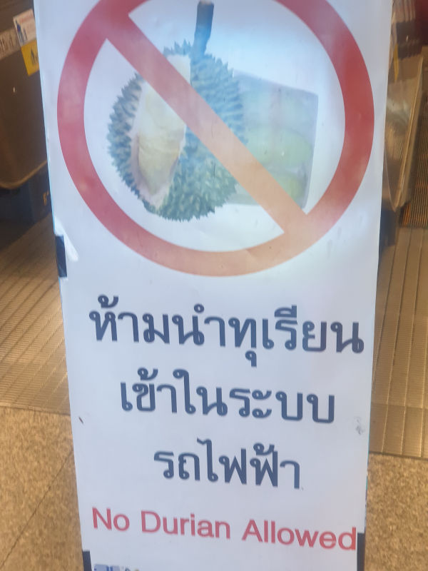
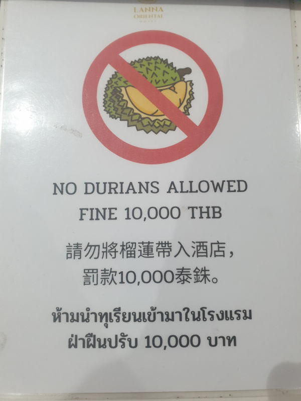
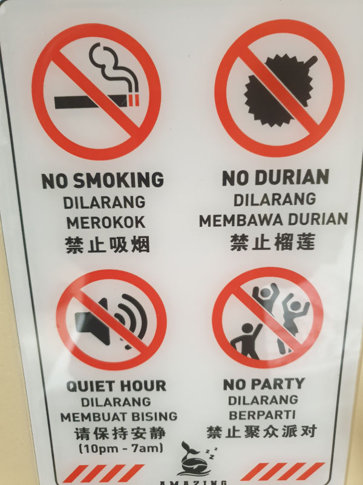
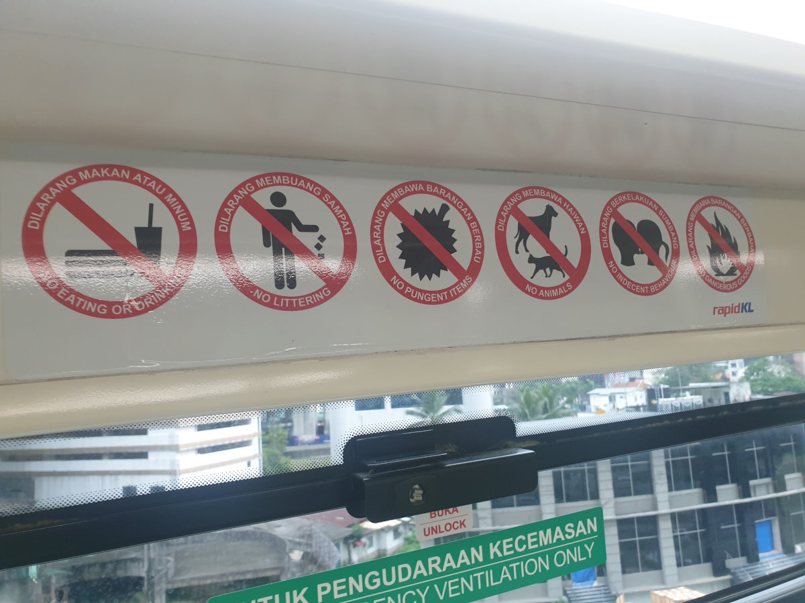

Wallace en route to Singapore, part 2
Some more post card style shots of the trip to Singapore:

"We stayed a day at desolate, volcanic Aden, and thence across to Galle, with its groves of cocoa-nut palms, and crowds of natives offering for sale the precious stones of the country;


"...thence across to Pulo Penang, with its picturesque mountain, its spice-trees, and its waterfall, and on down the Straits of Malacca, with its richly-wooded shores, to our destination, Singapore, where I was to begin the eight years of wandering throughout the Malay Archipelago, which constituted the central and controlling incident of my life."

Wallace with wildlife, part 4

These were both from photos that I took. The proboscis monkey was mentioned in TMA:
"After a few miles, the stream became very narrow and winding, and the whole country on each side was flooded. On the banks were abundance of monkeys - the common Macacus cynomolgus , a black Semnopithecus , and the extraordinary long-nosed monkey ( Nasalis larvatus ), which is as large as a three-year-old child, has a very long tail, and a fleshy nose, longer than that of the biggest-nosed man." (ch.4, p.75)
"Handsome woodpeckers and gay kingfishers, green and brown cuckoos with velvety red faces and green beaks, red-breasted doves and metallic honeysuckers, were brought in day after day, and kept me in a continual state of pleasurable excitement." (ch.3, p.45)

Wallace en route to Singapore
Wallace mentions almost nothing of his 2-month-long trip from England to Singapore in TMA, but includes many of the details from his notebooks in his autobiography "My Life".
"On returning to London, I at once call on Sir Roderick Murchison, and through his representations I received in a few days a first-class ticket overland to Singapore by the next Peninsular and Oriental steamer, which sailed in about a week, so that I did not lose much time. The voyage was a very interesting one, stopping a few hours at Gibraltar, passing within sight of the grand Sierra Nevada of Spain, staying a day at Malta, where the town and the tombs of the knights were inspected, and then on to Alexandria. But having by me a long letter I wrote to my school-fellow, Mr. George Silk, I will here quote from it a few of the impressions of my journey as they appeared to me at the time they occurred; and first as to my fellow-passengers:"

"Our company consists of a few officers and about twenty cadets for India, three or four Scotch clerks for Calcutta, the same number of business men for Australia, a Government interpreter and two or three others for China; a Frenchman; a Portuguese officer for Goa, with whom I converse; three Spaniards for the Philippines, very grave; a gentleman and two ladies, Dutch, going to Batavia; and some English officers for Alexandria. At Gibraltar we were quarantined for fear of cholera, then rather prevalent in England, and all communication with the ship was by means of tongs and a basin of water, the latter to drop the money in. We had a morning at Malta, and went on shore from 6 a.m. to 9 a.m., walked through the narrow streets, visited the market to hear the Maltese language, admired the beggar boys and girls, strolled through the Cathedral of St. John, gorgeous with marbles and gold and the tombs of the knights. A clergyman came on board here going to Jerusalem, and a namesake of my own to Bombay. The latter has a neat figure, sharp face, and looks highly respectable, not at all like me! I have found no acquaintance on board who exactly suits me. One of my cabin mates is going to Australia, and reads How to make Money—seems to be always thinking of it, and is very dull and unsociable. The other is one of the Indian cadets, very aristocratic, great in dressing-case and jewellery, takes an hour to dress, and persistently studies the Hindostanee grammar. The Frenchman, the Portuguese, and the Scotchman I find the most amusing; there is also a little fat Navy lieutenant, who is fond of practical jokes, and has started a Monté Table.

"Next morning at seven we started for Suez in small four-horsed two-wheeled omnibuses, carrying six passengers each. Horses were changed every five miles, and we had a meal every three hours at very comfortable stations. The desert is undulating, mostly covered with a coarse, volcanic-looking gravel. The road is excellent. The skeletons of camels—hundreds of them—lay all along the road; vultures, sandgrouse, and sand-larks were occasionally seen. We frequently saw the mirage, like distant trees and water. Near the middle station the pasha has a hunting-lodge—a perfect palace. The Indian and Australian mails, about six hundred boxes, as well as all the parcels, goods, and passengers luggage, were brought by endless trains of camels, which we passed on the way. At the eating-places I took a little stroll, gathering some of the curious highly odoriferous plants that grew here and there in the hollow, which I dried in my pocket-books, and I also found a few land-shells. We enjoyed the ride exceedingly, and reached Suez about midnight. It is a miserable little town, and the bazaar is small, dark, and dirty. There is said to be no water within ten miles. The next afternoon we went on board our ship, a splendid vessel with large and comfortable cabins, and everything very superior to the Euxine. Adieu."

I have given this description of my journey from Alexandria to Suez, over the route established by Lieutenant Waghorn, and which was superseded a few years later by the railway, and afterwards by the canal, because few persons now living will remember it, or know that it ever existed. Of the rest of our journey I have no record..."

Some of these scenes were inspired by the 19th century Egypt postcard collection at the Smithsonian. None of these were directly used, but nonetheless were interesting to view, such as the old style Arabian cafe or the cloth seller.
Wallace with wildlife, part 3
More wildlife from the Borneo sections. The beetle is derived from a public photograph, Cyriopalus wallacei, that is named after Wallace. It was apparently found in Sarawak.


The crocodile photo was taken by me, in Borneo.
Wallace in Malacca, part 2

More bird shots in the area around Malacca:
"Birds and most other kinds of animals being scarce at Singapore, I left it in July for Malacca, where I spent more than two months in the interior, and made an excursion to Mount Ophir... " (ch.3, p.42)
"...as well as the large green barbets ( Megalaema versicolor )-fruit-eating birds, something like small toucans, with a short, straight bristly bill, and whose head and neck are variegated with patches of the most vivid blue and crimson." (ch.3, p.45)

This species might have been renamed since Wallace's time. It is based off another photo from iNaturalist, of the endangered Psilopogon rafflesii.

Wallace in Singapore, part 3
Wallace reported collecting a lot of beetles in the jungles nearby the town:
"Several hours in the middle of every fine day were spent in these patches of forest, which were delightfully cool and shady by contrast with the bare open country we had to walk over to reach them. The vegetation was most luxuriant, comprising enormous forest trees, as well as a variety of ferns, caladiums, and other undergrowth, and abundance of climbing rattan palms. Insects were exceedingly
abundant and very interesting, and every day furnished scores of new and curious forms. In about two months I obtained no less than 700
species of beetles, a large proportion of which were quite new, and among them were 130 distinct kinds of the elegant Longicorns (Cerambycidae), so much esteemed by collectors. Almost all these were collected in one patch of jungle, not more than a square mile in extent, and in all my subsequent travels in the East I rarely if ever met with so productive a spot. This exceeding productiveness was due in part no doubt to some favourable conditions in the soil, climate, and vegetation, and to the season being very bright and sunny, with sufficient showers to keep everything fresh. But it was also in a great measure dependent, I feel sure, on the labours of the Chinese wood cutters. They had been at work here for several years, and during all that time had furnished a continual supply of dry and dead and decaying leaves and bark, together with abundance of wood and sawdust, for the nourishment of insects and their larvæ. This had led to the assemblage of a great variety of species in a limited space, and I was the first naturalist who had come to reap the harvest they had prepared."


The beetles were from photographs on iNaturalist, for the Olenecamptus bilobus Cocoa Branch Borer, Chiridopsis scalaris , Cosmodela aurulenta Golden-spotted Tiger Beetle , Heteroneda billardieri Netty Ladybird , Oryctes rhinoceros Coconut Rhinoceros Beetle, and Belionota prasina.
Wallace in Singapore, part 2
Wallace and Charley spent several months in Singapore, and likely had adventures around the town.


In the end, Charley decides to buy it anyway. The scene is a light joke, since Tiger Balm was not commercialized yet, nor was that the original name, nor does it contain tiger. This was meant to suggest that Charley liked the city so much, he would eventually move there.


Barbers of Singapore:
"The barbers have plenty to do, shaving heads and cleaning ears; for which latter operation they have a great array of little tweezers, picks, and brushes." (ch.2, p.37)
Street food of Singapore:
"All about the streets are sellers of water, vegetables, fruit, soup, and agar-agar (a jelly made of seaweed), who have many cries as unintelligible as those of London. Others carry a portable cooking-apparatus on a pole balanced by a table at the other end, and serve up a meal of shell-fish, rice, and vegetables for two or three halfpence." (ch.2, p.38)
Much of the writing in this chapter is quite generic, so scenes have to be imagined. He mentions the tigers of Singapore:
"There are always a few tigers roaming about Singapore, and they kill on an average a Chinaman every day, principally those who work in the gambir plantations, which are always made in newly cleared jungle. We heard a tiger roar once or twice in the evening, and it was rather nervous work hunting for insects among the fallen trunks and old sawpits when one of these savage animals might be lurking close by, waiting an opportunity to spring upon us." (ch.2, p.40)

"Here and there, too, were tiger pits, carefully covered over with sticks and leaves, and so well concealed that in several cases I had a narrow escape from falling into them. They are shaped like an iron furnace, wider at the bottom than the top, and are perhaps fifteen or twenty feet deep, so that it would be almost impossible for a person unassisted to get out of one. Formerly a sharp stake was stuck erect in the bottom; but after an unfortunate traveller had been killed by falling on one, its use was forbidden." (ch.2, p.40)
Wallace in Singapore, part 1
Wallace makes repeated stopovers in the busy city of Singapore, the first of which lasted a couple months. Conversion of the old photographs into establishing shots still has some trouble, since many of the objects are random pixels rather than zoomed out people, boats, buildings.


A fictionalized scene in the joked-named 紅毛茶 tea house, full of other European patrons. The character of Charley would have been maybe 15, so I imagine Charley to be impressed by everything. He needs a funnier line, though.
Wallace with wildlife, part 2
More wildlife from the Borneo sections.


The monkey is mentioned several times, as "Macacus cynomolgus", which is now called long-tailed macaque Macaca fascicularis, or crab-eating macaque. This is distinct from the pig-tailed macaque, Macaca nemestrina that is also found in Borneo. Wallace did mention these monkeys several times in TMA, including one that he kept with his infant orangutan:
"After I had had the little Mias about three weeks, I fortunately obtained a young hare-lip monkey ( Macacus cynomolgus ), which, though small, was very active, and could feed itself. I placed it in the same box with the Mias, and they immediately became excellent friends, neither exhibiting the least fear of the other. The little monkey would sit upon the other’s stomach, or even on its face, without the least regard to its feelings. While I was feeding the Mias, the monkey would sit by, picking up all that was spilt, and occasionally putting out its hands to intercept the spoon; and as soon as I had finished would pick off what was left sticking to the Mias’s lips, and then pull open its mouth and see if any still remained inside; afterwards lying down on the poor creature’s stomach as on a comfortable cushion. The little helpless Mias would submit to all these insults with the most exemplary patience, only too glad to have something warm near it, which it could clasp affectionately in its arms. It sometimes, however, had its revenge; for when the monkey wanted to go away, the Mias would hold on as long as it could by theloose skin of its back or head, or by its tail, and it was only after many vigorous jumps that the monkey could make his escape." (ch.4, p.65)
The two beetles are derived from public photographs, Odontolabis brookeana, that I assume is also named after Sir James Brooke, and genus Tetraphyllus, a remarkably iridescent beetle from that region.
Wallace with wildlife, part 1
More wildlife shots to set the scene.


The lizard is a Blue-eyed anglehead lizard Gonocephalus liogaster, based on a photo that I took in Borneo. Wallace did not mention this one in TMA, but he apparently collected one in Sarawak.
The bird in question is Cymbirhynchus macrorhynchos. The scene is fictional, inspired after a real photo I saw posted on iNaturalist. In TMA, he actually shot it:
"The very first time I fired my gun I brought down one of the most curious and beautiful of the Malacca birds, the blue-billed gaper (Cymbirhynchus macrorhynchus), called by the Malays the 'Rain-bird.' It is about the size of a starling, black and rich claret colour with white shoulder stripes, and a very large and broad bill of the most pure cobalt blue above and orange below, while the iris is emerald green. As the skins dry the bill turns dull black, but even then the bird is handsome. When fresh killed, the contrast of the vivid blue with the rich colours of the plumage is remarkably striking and beautiful." (ch.3, p.45)
The frog is Wallace's flying frog Rhacophorus nigropalmatus, based on a photo from iNaturalist. Wallace describes this one in detail in TMA:
"One of the most curious and interesting reptiles which I met with in Borneo was a large tree-frog, which was brought me by one of the Chinese workmen. He assured me that he had seen it come down, in a slanting direction, from a high tree, as if it flew. On examining it, I found the toes very long and fully webbed to their very extremity, so that when expanded they offered a surface much larger than that of the body. The fore legs were also bordered by a membrane, and the body was capable of considerable inflation. The back and limbs were of a very deep shining green colour, the under surface and the inner toes yellow, while the webs were black, rayed with yellow. The body was about four inches long, while the webs of each hind foot, when fully expanded, covered a surface of four square inches, and the webs of all the feet together about twelve square inches. As the extremities of the toes have dilated discs for adhesion, showing the creature to be a true tree-frog, it is difficult to imagine that this immense membrane of the toes can be for the purpose of swimming only, and the account of the Chinaman, that it flew down from the tree, becomes more credible. This is, I believe, the first instance known of a “flying frog,” and it is very interesting to Darwinians as showing that the variability of the toes, which have been already modified for purposes of swimming and adhesive climbing, have been taken advantage of to enable an allied species to pass through the air like the flying lizard. It would appear to be a new species of the genus Rhacophorus , which consists of several frogs of a much smaller size than this, and having the webs of the toes less developed." (ch.4, p.58)
Wallace in Borneo, part 4

Some scenes from Chapter 5: Borneo: Journey in the Interior. He describes several stories of the reactions of people that have never seen a European before:
"It was evident that Europeans seldom came here, for numbers of women skeltered away as I walked through the village; and one girl about ten or twelve years old, who had just brought a bamboo full of water from the river, threw it down with a cry of horror and alarm the moment she caught sight of me, turned round and jumped into the stream. She swam beautifully, and kept looking back as if expecting I would follow her, screaming violently all the time; while a number of men and boys were laughing at her ignorant terror." (ch.5, p.89)


This one was difficult to get to render correct, due to the number of people. In TMA, he describes a scene of meeting a village:
"Early in the afternoon we reached the village of Borotói, and, though it would have been easy to reach the next one before night, I was obliged to stay, as my men wanted to return and others could not possibly go on with me without the preliminary talking. Besides, a white man was too great a rarity to be allowed to escape them, and their wives would never have forgiven them if, when they returned from the fields, they found that such a curiosity had not been kept for them to see. On entering the house to which I was invited, a crowd of sixty or seventy men, women, and children gathered round me, and I sat for half an hour like some strange animal submitted for the first time to the gaze of an inquiring public. Brass rings were here in the greatest profusion, many of the women having their arms completely covered with them, as well as their legs from the ankle to the knee. Round the waist they wear a dozen or more coils of fine rattan stained red, to which the petticoat is attached. Below this are generally a number of coils of brass wire, a girdle of small silver coins, and sometimes a broad belt of brass ring armour. On their heads they wear a conical hat without a crown, formed of variously coloured beads, kept in shape by rings of rattan, and forming a fantastic but not unpicturesque head-dress." (ch.5, p.93)

In TMA, he describes a comical scene:
"Late in the afternoon we reached Sodos, situated on a spur between two streams, but so surrounded by fruit trees that little could be seen of the country. The house was spacious, clean, and comfortable, and the people very obliging. Many of the women and children had never seen a white man before, and were very sceptical as to my being the same colour all over as my face. They begged me to show them my arms and body, and they were so kind and good-tempered that I felt bound to give them some satisfaction, so I turned up my trousers and let them see the colour of my leg, which they examined with great interest." (ch.5, p.99)
Wallace in Malacca
Here is a fictionalized scene with his field assistant Charles Allen, drinking from pitcher plants.

In TMA, Wallace writes:
"We had been told we should find water at Padang-batu, but we looked about for it in vain, as we were exceedingly thirsty. At last we turned to the pitcher-plants, but the water contained in the pitchers (about half a pint in each) was full of insects, and otherwise uninviting. On tasting it, however, we found it very palatable though rather warm, and we all quenched our thirst from these natural jugs." (ch.3, p.50)
"The wonderful Pitcher-plants, forming the genus Nepenthes of botanists, here reach their greatest development. Every mountain-top abounds with them, running along the ground, or climbing over shrubs and stunted trees; their elegant pitchers hanging in every direction. Some of these are long and slender, resembling in form the beautiful Philippine lace sponge ( Euplectella ), which has now become so common; others are broad and short. Their colours are green, variously tinted and mottled with red or purple. The finest yet known were obtained on the summit of Kinabalu, in North-west Borneo. One of the broad sort, Nepenthes rajah , will hold two quarts of water in its pitcher. Another, Nepenthes edwardsiania , has a narrow pitcher twenty inches long; while the plant itself grows to a length of twenty feet." (ch.5, p.108)
Wallace in Borneo, part 1
Some exploratory concept art for an Alfred Russel Wallace manga, based on his writings in "The Malay Achipelago" (1869). Wallace wrote three chapters about Borneo, the wildlife, and the people. Making wildlife shots in anime is quite hard for AI, as the details of what separate two species are difficult to generalize.


For birds, Wallace had numerous sketches including a drawing of a female hornbill from Borneo, called "burung kenyalang" in Malay, even though he did not discuss them extensively in TMA. In other writings, he states:
"The rhinoceros hornbill sometimes exceeds four feet in length, and exhibits the greatest size reached in the Passerine order of birds. The exertion of flying is so great that it generally rests at intervals of about a mile on some very lofty tree, whence after a few minutes it resumes its flight. In some of the interior villages of Sumatra and Borneo, where a gun is never heard, they will settle upon and even build in trees in the village itself; but in more populous districts, where guns and Europeans abound, they are very shy, and take flight on seeing a man even at a considerable distance."


* Ornithoptera brookeana has been renamed to Trogonoptera brookiana.
This is a fictionalized scene of Wallace receiving a specimen from a unnamed Dayak. He did spend some time discussing this butterfly, though. In TMA, Wallace writes:
"My collection of butterflies was not large; but I obtained some rare and very handsome insects, the most remarkable being the
Ornithoptera brookeana , one of the most elegant species known. This beautiful creature has very long and pointed wings, almost resembling a sphinx moth in shape. It is deep velvety black, with a curved band of spots of a brilliant metallic-green colour extendingacross the wings from tip to tip, each spot being shaped exactly like a small triangular feather, and having very much the effect of a row of the wing coverts of the Mexican trogon laid upon black velvet. The only other marks are a broad neck-collar of vivid crimson, and a few delicate white touches on the outer margins of the hind wings. This species, which was then quite new and which I named after Sir James Brooke, was very rare. It was seen occasionally flying swiftly in the clearings, and now and then settling for an instant at puddles and muddy places, so that I only succeeded in capturing two or three specimens." (ch.4, p.57)
Wallace in Borneo, part 2
The orangutan, which he also calls "mias" from the Dayak languages, gets an entire chapter. The same word in modern spelling would be "mayas", indicating that the pronunciation is not "mee-as", but "my-as".


This is a fictionalized scene, about the killing of one of the 17 orangutans. (ch.4 p.85). The establishing shot just shows the dense jungle with the many rivers where orangutans live. Wallace generally describes this kind of scene multiple times:
"Exactly a week after I had caught this interesting little animal I succeeded in shooting a full-grown male Orangutan. I had just come home from an entomologizing excursion when Charles rushed in out of breath with running and excitement, and exclaimed, interrupted by gasps, 'Get the gun, sir—be quick—such a large Mias!' 'Where is it?' I asked, taking hold of my gun as I spoke, which happened luckily to have one barrel loaded with ball. 'Close by, sir—on the path to the mines—he can’t get away.' Two Dayaks chanced to be in the house at the time, so I called them to accompany me, and started off, telling Charley to bring all the ammunition after me as soon as possible." (ch.4, p.68)
Wallace in Borneo, part 3
Wallace had multiple encounters with Sir James Brooke, the White Rajah of Sarawak. Their correspondance together is archived at the Brooke Trust website. In TMA, he writes:
"I was hospitably entertained by Sir James Brooke, and lived in his house whenever I was at the town of Saráwak in the intervals of my journeys." (ch.4, p.53)
"On reaching Saráwak early in December I found there would not be an opportunity of returning to Singapore till the latter end of January. I therefore accepted Sir James Brooke’s invitation to spend a week with him and Mr. St. John at his cottage on Peninjauh. This is a very steep pyramidal mountain of crystalline basaltic rock, about a thousand feet high, and covered with luxuriant forest. There are
three Dayak villages upon it, and on a little platform near the summit is the rude wooden lodge where the English Rajah was accustomed to
go for relaxation and cool fresh air. It is only twenty miles up the river, but the road up the mountain is a succession of ladders on the face of precipices, bamboo bridges over gullies and chasms, and slippery paths over rocks and tree-trunks and huge boulders as big as houses. A cool spring under an overhanging rock just below the cottage furnished us with re- freshing baths and delicious drinking water, and the Dayaks brought us daily heaped-up baskets of mangosteens and lansats, two of the most delicious of the subacid tropical fruits. We returned to Saráwak for Christmas (the second I had spent with Sir James Brooke), when all the Europeans both in the town and from the outstations enjoyed the hospitality of the Rajah, who possessed in a pre-eminent degree the art of making everyone around him comfortable and happy." (ch.5, p.113)
It was difficult to get the look of the age correct, as Brooke would have been 20 years older than Wallace.


This scene is also fictional, as Brooke's country cottage likely was much more rustic. The location is apparently here in the mountains, stated to be at a place called Peninjau, south west of Kuching. The text in these is taken directly from Wallace's paper. A similar discussion is likely to have occurred, as Brooke and Wallace had mentioned the theory of evolution in letters, indicating that the two men most certainly talked about it.
Kings and Queens
The durian and the mangosteen are two tropical fruits, found throughout south-east Asia. The two fruits differ greatly from each other, the mangosteen being a small, tart, and juicy fruit though overall does not have a strongly distinct flavor, while the durian is a fruit of its own. It is the size of a coconut with sharp, woody spines. The flavor is often difficult to describe. I recall a discussion with a Malay traveler who said "How can you describe what truffle smells like, other than truffle?". The durian is known for a strong odor is that not always appreciated, and for this reason it is banned from all hotels and public transport.




British naturalist Alfred Russel Wallace discusses the durian at length in an essay "On the Bamboo and Durian of Borneo", where he wrote "A rich custard highly flavoured with almonds gives the best general idea of it, but there are occasional wafts of flavour that call to mind cream-cheese, onion-sauce, sherry-wine, and other incongruous dishes."
I would describe the aroma as "generic garbage" (i.e. not a specific garbage like fish) or "raw onion cheese". The flavor is almost sickeningly sweet with the texture of custard. I have tried it in many forms including sticky rice, candy, mochi, ice cream, dried, and raw, and I would argue that none of them really improve on the basic flavor.
Wallace also had noted that the locals refer to the durian as the "King of fruits", and this is likewise true today. I suspect this reflects qualities that the people desire in a king, notably have a strong, fierce exterior, but sweet on the inside, and strongly smelling. That is, the durian is both loved and feared. During an informal survey, I found universal agreement that the durian is the king of fruits. When asked "What is the queen of fruits?", the answers were surprisingly varied: mangosteen, mango, coconut, champedek, or simply that there is no queen. At the time, Wallace had stated "If I had to fix on two only as representing the perfection of the two classes, I should certainly choose the Durian and the Orange as the king and queen of fruits."

It was brought to my attention that the durian is considering a "heating" fruit, while then mangosteen is a "cooling" fruit, meaning that the two are naturally a pair. They are sometimes served together. Orange is not a cooling fruit, while the coconut is. Thus, the coconut would seem to be a better match for the durian, as they are similarly sized, while the coconut is smooth instead of spiky.